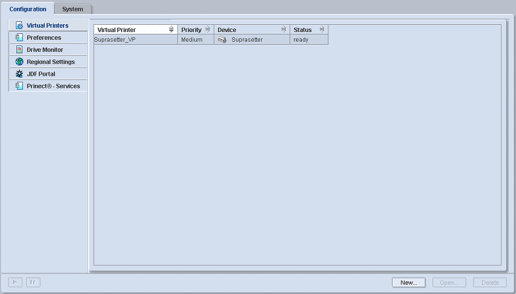
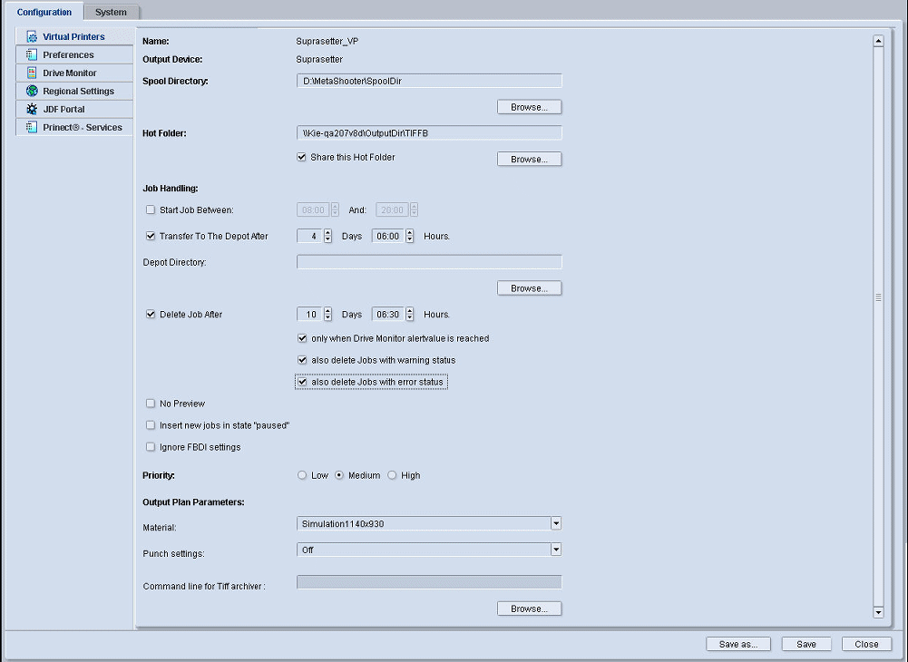
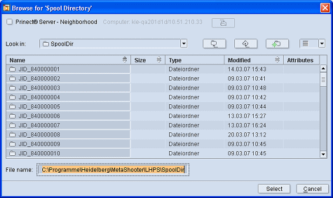
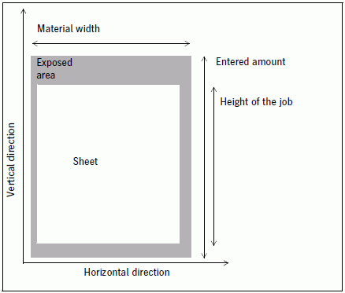
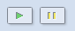

Виртуальные принтеры представляют собой «входы» системы Prinect Shooter. Данные о работе должны быть проверены в формате Tiff-B и отправлены на горячие папки.
В разделе «Виртуальные принтеры» вы можете увидеть список установленных виртуальных принтеров.

Список состоит из следующих столбцов:
Название виртуального принтера.
Приоритет виртуального принтера представлен здесь.
Установка выходного устройства.
Информация о состоянии виртуального принтера.
Дважды щелкнув запись в списке или выбрав запись, а затем нажав кнопку «Открыть», вы можете изменить существующий виртуальный принтер. Нажав кнопку «Новый», можно создать новый виртуальный принтер. Режим просмотра деталей для настройки дисплеев виртуального принтера:

Вы можете настроить следующие свойства:
Вы найдете общие настройки в верхней части окна.
В "Spool Directory" можно определить каталог spool для виртуального принтера. Все задания, которые отправляются на виртуальный принтер, собираются в каталоге spool. Каталог катушек должен быть расположен на жестком диске, который имеет достаточно свободного пространства памяти. Каталог шаблонов по умолчанию может (и должен) быть определен при установке программного обеспечения Prinect Shooter. При необходимости в меню «Пуск Windows» можно изменить каталог спаолов по умолчанию с помощью «Начать > Программы > Heidelberg Prinect Shooter > Модифицировать выбор папок».
Как правило, эта настройка по умолчанию является той, которая вам нужна, и ее не нужно менять. Эта опция позволяет настроить отдельный каталог для одного виртуального принтера в том случае, если этому принтеру необходимо использовать свой собственный каталог, потому что, например, будут обрабатываться чрезвычайно большие объемы данных. Как правило, вы должны выбрать диск, на котором не установлена ни операционная система, ни программное обеспечение Prinect Shooter. Это справедливо для всех виртуальных принтеров, которые вы настроите. Однако, если у вас заканчивается память на диске с каталогом катушек (вы можете наблюдать за этим в мониторе диска, посмотрите, как это работает). Монитор вождения), вы можете выбрать каталог катушек на другом диске в этой коробке.
Нажмите «Просмотр», чтобы открыть диалог браузера, где вы можете выбрать папку или создать новую.

Вы можете выбрать диск в поле «Посмотреть в». Затем перечислены все папки на выбранном диске.
Когда вы дважды щелкаете имя папки, эта папка открывается, отображая в ней подпапки и / или файлы. Отметьте папку в списке, а затем нажмите «Выбрать». Затем эта папка выбирается в качестве каталога spool.
Этот диалог браузера изменяется при включении опции «Prinect® Server Neighborhood»: теперь вы видите диски и папки компьютера Prinect Shooter, поскольку служба Prinect Shooter будет «видеть» их. Другими словами, также отображаются пользовательские разрешения и опции доступа службы Prinect Shooter. Диалог показывает диски и папки с разрешениями и вариантами доступа пользователя, вошедшего в операционную систему Windows, если эта опция не включена. Этот диалог может варьироваться в зависимости от пользовательских разрешений, которые установлены. Вы всегда можете использовать эту опцию, даже если пользователь, который в настоящее время вошел в систему, имеет ограниченные разрешения.
Вы можете создать новую папку с помощью кнопки «Новая папка».
Вы определяете горячую папку для виртуального принтера в "Горячая папка". Здесь вы также можете нажать «Просмотр», чтобы выбрать другую папку или создать новую. Эта папка ввода виртуального принтера («горячая папка») отслеживает входящие данные TIFF-B. Обычно эта папка находится на компьютере, на котором генерируются данные TIFF-B. Эта папка отображается на ПК Prinect Shooter как сетевой привод. Вы должны отобразить сетевой диск в проводнике Windows, прежде чем вы сможете настроить виртуальный принтер.
 Примечание: Картографированные диски не отображаются в поле «Посмотреть» в Windows Explorer, потому что служба, такая как Prinect Shooter, не может «видеть» эти диски. Вы должны ввести папки, расположенные на других компьютерах, в поля «Справочник пула» или «Горячая папка», используя их «путь UNC» (\\computername\foldername).
Примечание: Картографированные диски не отображаются в поле «Посмотреть» в Windows Explorer, потому что служба, такая как Prinect Shooter, не может «видеть» эти диски. Вы должны ввести папки, расположенные на других компьютерах, в поля «Справочник пула» или «Горячая папка», используя их «путь UNC» (\\computername\foldername).
Горячая папка используется в сети, если вы проверите "Поделиться этим" Опция «Горячая папка» (по умолчанию). При необходимости вы должны поделиться горячей папкой вручную, если вы не проверите эту опцию.
Примечание: Внешние пользователи сначала читают разрешения, только если вы используете выходную папку Tiff-B в качестве горячей папки на компьютере Prinect MetaDimension. Чтобы Prinect Shooter удалил заполненные задания в горячей папке, вы также должны разрешить службе Prinect Shooter изменять данные в горячей папке. Для этого отобразите Windows Explorer на компьютере Prinect MetaDimension и щелкните правой кнопкой мыши пункт горячей папки, чтобы отобразить его контекстно-чувствительное меню. Выберите пункт меню «Обмен и безопасность» и нажмите «Разрешения». В списке «Группа или имена пользователей» нажмите имя пользователя службы Prinect Shooter (например). "принц" и затем включить "Модифицировать" в группе "Разрешения для". После этого подтвердите диалоги «Разрешения на» и «Свойства» с «ОК».
В этом разделе вы можете определить параметры, которые влияют на обработку работы:
В «Справочнике депо» вы можете переопределить каталог, в котором будут сохранены сохраненные задания. В Prinect Shooter задания состоят из файлов Tiff-B, и по этой причине вы должны выбрать носитель данных с достаточным пространством для каталога депо.
Вы можете включить следующие дополнительные опции, если вы включите эту опцию:
В этой колонке вы можете дать виртуальному принтеру приоритет для обработки работы. Настраивая несколько виртуальных принтеров с различными приоритетами, вы можете определить приоритет вашей работы с печатью, выбрав конкретный виртуальный принтер.
Примечание: Вы не можете установить «Срочный» в качестве приоритета здесь, так как «срочный» может использоваться только с одной работой в то время, которое должно быть произведено немедленно (см. Печать «Срочные» задания). По этой причине вы можете назначить «Срочный» в качестве приоритета только вручную. В виртуальном принтере это невозможно.
Вы можете настроить параметры вывода для конкретного устройства в этом разделе. Варианты, доступные в этом разделе, варьируются в зависимости от подключенного устройства вывода. По этой причине приведенные ниже описания следует рассматривать только в качестве примеров.
Примечание: Материальные данные также могут быть в файле Tiff-B. Если это так, материальные данные с задания Tiff-B перезаписывают настройку материала вашего виртуального принтера.
Вы можете установить длину в вертикальном направлении в текстовом поле «Абсолютная длина». Затем область будет выставлена, как показано на графике ниже:
в горизонтальном направлении: вся ширина материала листа.
в вертикальном направлении: введенная сумма, но по крайней мере высота работы.

Вы можете сохранить изменения, внесенные в параметры виртуального принтера с помощью «Сохранить».
Используйте «Сохранить как» для создания нового виртуального принтера с измененными параметрами. Дайте этому принтеру новое имя.
Отметьте виртуальный принтер в списке и нажмите «Открыть» или дважды щелкните имя виртуального принтера, чтобы открыть подробности о нем.
Вы можете просмотреть или отредактировать настройки виртуального принтера в этом представлении. Варианты те же, что и для нового виртуального принтера (см. Открыть виртуальный принтер или создать новый).
Вы можете пометить элемент в списке виртуальных принтеров и удалить этот выбранный виртуальный принтер, нажав «Удалить».
Вы также можете использовать кнопки «Игрок», чтобы приостановить выбранный виртуальный принтер или перезапустить приостановленный.

Copyright © 2013 Heidelberger Druckmaschinen AG